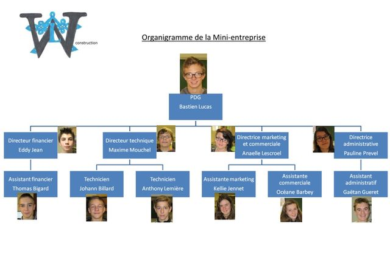

Préambule sur le Projet
Préambule sur le Projet
C'est VOTRE projet et non celui de votre enseignant!
Recherche d'idée projet:
Nous vous demandons de réaliser une carte mentale, afin d'organiser et synthétiser vos idées. Vous réaliserez votre carte sur Mindomo
Hierarchisation:
Election d'un chef de projet et création d'un organigramme

Created with the Personal Edition of HelpNDoc: Easy CHM and documentation editor